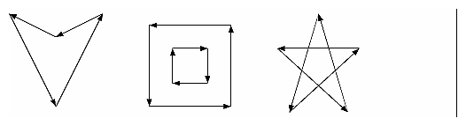
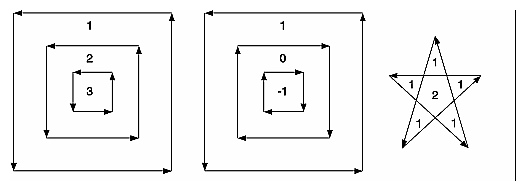

The OpenGL library (GL) is designed for low-level operations, both streamlined and accessible to hardware acceleration. The OpenGL Utility Library (GLU) complements the OpenGL library, supporting higher-level operations. Some of the GLU operations are covered in other chapters. Mipmapping (gluBuild*DMipmaps()) and image scaling (gluScaleImage()) are discussed along with other facets of texture mapping in Chapter 9. Several matrix transformation GLU routines (gluOrtho2D(), gluPerspective(), gluLookAt(), gluProject(), and gluUnProject()) are described in Chapter 3. The use of gluPickMatrix() is explained in Chapter 13. The GLU NURBS facilities, which are built atop OpenGL evaluators, are covered in Chapter 12. Only two GLU topics remain: polygon tessellators and quadric surfaces, and those topics are discussed in this chapter.
To optimize performance, the basic OpenGL only renders convex polygons, but the GLU contains routines to tessellate concave polygons into convex ones, which the basic OpenGL can handle. Where the basic OpenGL operates upon simple primitives, such as points, lines, and filled polygons, the GLU can create higher-level objects, such as the surfaces of spheres, cylinders, and cones.
This chapter has the following major sections.
Polygon Tessellation
As discussed in "Describing Points, Lines, and Polygons" in Chapter 2, OpenGL can directly display only simple convex polygons. A polygon is simple if the edges intersect only at vertices, there are no duplicate vertices, and exactly two edges meet at any vertex. If your application requires the display of concave polygons, polygons containing holes, or polygons with intersecting edges, those polygons must first be subdivided into simple convex polygons before they can be displayed. Such subdivision is called tessellation, and the GLU provides a collection of routines that perform tessellation. These routines take as input arbitrary contours, which describe hard-to-render polygons, and they return some combination of triangles, triangle meshes, triangle fans, or lines.
Figure 11-1 shows some contours of polygons that require tessellation: from left to right, a concave polygon, a polygon with a hole, and a self-intersecting polygon.

Figure 11-1 : Contours That Require Tessellation
If you think a polygon may need tessellation, follow these typical steps.
Create a new tessellation object with gluNewTess().
Use gluTessCallback() several times to register callback functions to perform operations during the tessellation. The trickiest case for a callback function is when the tessellation algorithm detects an intersection and must call the function registered for the GLU_TESS_COMBINE callback.
Specify tessellation properties by calling gluTessProperty(). The most important property is the winding rule, which determines the regions that should be filled and those that should remain unshaded.
Create and render tessellated polygons by specifying the contours of one or more closed polygons. If the data for the object is static, encapsulate the tessellated polygons in a display list. (If you don't have to recalculate the tessellation over and over again, using display lists is more efficient.)
If you need to tessellate something else, you may reuse your tessellation object. If you are forever finished with your tessellation object, you may delete it with gluDeleteTess().
Note: The tessellator described here was introduced in version 1.2 of the GLU. If you are using an older version of the GLU, you must use routines described in "Describing GLU Errors". To query which version of GLU you have, use gluGetString(GLU_VERSION), which returns a string with your GLU version number. If you don't seem to have gluGetString() in your GLU, then you have GLU 1.0, which did not yet have the gluGetString() routine.
Create a Tessellation Object
As a complex polygon is being described and tessellated, it has associated data, such as the vertices, edges, and callback functions. All this data is tied to a single tessellation object. To perform tessellation, your program first has to create a tessellation object using the routine gluNewTess().
- GLUtesselator* gluNewTess(void);
Creates a new tessellation object and returns a pointer to it. A null pointer is returned if the creation fails.
A single tessellation object can be reused for all your tessellations. This object is required only because library routines might need to do their own tessellations, and they should be able to do so without interfering with any tessellation that your program is doing. It might also be useful to have multiple tessellation objects if you want to use different sets of callbacks for different tessellations. A typical program, however, allocates a single tessellation object and uses it for all its tessellations. There's no real need to free it because it uses a small amount of memory. On the other hand, it never hurts to be tidy.
Tessellation Callback Routines
After you create a tessellation object, you must provide a series of callback routines to be called at appropriate times during the tessellation. After specifying the callbacks, you describe the contours of one or more polygons using GLU routines. When the description of the contours is complete, the tessellation facility invokes your callback routines as necessary.
Any functions that are omitted are simply not called during the tessellation, and any information they might have returned to your program is lost. All are specified by the single routine gluTessCallback().
- void gluTessCallback(GLUtesselator *
tessobj, GLenum type, void (*fn)());
Associates the callback function fn with the tessellation object tessobj. The type of the callback is determined by the parameter type, which can be GLU_TESS_BEGIN, GLU_TESS_BEGIN_DATA, GLU_TESS_EDGE_FLAG, GLU_TESS_EDGE_FLAG_DATA, GLU_TESS_VERTEX, GLU_TESS_VERTEX_DATA, GLU_TESS_END, GLU_TESS_END_DATA, GLU_TESS_COMBINE, GLU_TESS_COMBINE_DATA, GLU_TESS_ERROR, and GLU_TESS_ERROR_DATA. The twelve possible callback functions have the following prototypes:
GLU_TESS_BEGIN void begin(GLenum type);
GLU_TESS_BEGIN_DATA void begin(GLenum type,
void *user_data);
GLU_TESS_EDGE_FLAG void edgeFlag(GLboolean flag);
GLU_TESS_EDGE_FLAG_DATA void edgeFlag(GLboolean flag,
void *user_data);
GLU_TESS_VERTEX void vertex(void *vertex_data);
GLU_TESS_VERTEX_DATA void vertex(void *vertex_data,
void *user_data);
GLU_TESS_END void end(void);
GLU_TESS_END_DATA void end(void *user_data);
GLU_TESS_ERROR void error(GLenum errno);
GLU_TESS_ERROR_DATA void error(GLenum errno, void *user_data);
GLU_TESS_COMBINE void combine(GLdouble coords[3],
void *vertex_data[4],
GLfloat weight[4],
void **outData);
GLU_TESS_COMBINE_DATA void combine(GLdouble coords[3],
void *vertex_data[4],
GLfloat weight[4],
void **outData,
void *user_data);
To change a callback routine, simply call gluTessCallback() with the new routine. To eliminate a callback routine without replacing it with a new one, pass gluTessCallback() a null pointer for the appropriate function.
As tessellation proceeds, the callback routines are called in a manner
similar to how you use the OpenGL commands glBegin(), glEdgeFlag*(), glVertex*(), and glEnd(). (See "Marking Polygon Boundary Edges" in Chapter 2 for more information about glEdgeFlag*().) The combine callback is used to create new vertices where edges intersect. The error callback is invoked during the tessellation only if something goes wrong.
For every tessellator object created, a GLU_TESS_BEGIN callback is invoked with one of four possible parameters: GL_TRIANGLE_FAN, GL_TRIANGLE_STRIP, GL_TRIANGLES, and GL_LINE_LOOP. When the tessellator decomposes the polygons, the tessellation algorithm will decide which type of triangle primitive is most efficient to use. (If the GLU_TESS_BOUNDARY_ONLY property is enabled, then GL_LINE_LOOP is used for rendering.)
Since edge flags make no sense in a triangle fan or triangle strip, if there is a callback associated with GLU_TESS_EDGE_FLAG that enables edge flags, the GLU_TESS_BEGIN callback is called only with GL_TRIANGLES. The GLU_TESS_EDGE_FLAG callback works exactly analogously to the OpenGL glEdgeFlag*() call.
After the GLU_TESS_BEGIN callback routine is called and before the callback associated with GLU_TESS_END is called, some combination of the GLU_TESS_EDGE_FLAG and GLU_TESS_VERTEX callbacks is invoked (usually by calls to gluTessVertex(), which is described on page 425). The associated edge flags and vertices are interpreted exactly as they are in OpenGL between glBegin() and the matching glEnd().
If something goes wrong, the error callback is passed a GLU error number. A character string describing the error is obtained using the routine gluErrorString(). (See "Describing GLU Errors" for more information about this routine.)
Example 11-1 shows a portion of tess.c, where a tessellation object is created and several callbacks are registered.
Example 11-1 : Registering Tessellation Callbacks: tess.c
/* a portion of init() */
tobj = gluNewTess();
gluTessCallback(tobj, GLU_TESS_VERTEX,
(GLvoid (*) ()) &glVertex3dv);
gluTessCallback(tobj, GLU_TESS_BEGIN,
(GLvoid (*) ()) &beginCallback);
gluTessCallback(tobj, GLU_TESS_END,
(GLvoid (*) ()) &endCallback);
gluTessCallback(tobj, GLU_TESS_ERROR,
(GLvoid (*) ()) &errorCallback);
/* the callback routines registered by gluTessCallback() */
void beginCallback(GLenum which)
{
glBegin(which);
}
void endCallback(void)
{
glEnd();
}
void errorCallback(GLenum errorCode)
{
const GLubyte *estring;
estring = gluErrorString(errorCode);
fprintf (stderr, "Tessellation Error: %s\n", estring);
exit (0);
}
In Example 11-1, the registered GLU_TESS_VERTEX callback is simply glVertex3dv(), and only the coordinates at each vertex are passed along. However, if you want to specify more information at every vertex, such as a color value, a surface normal vector, or texture coordinate, you'll have to make a more complex callback routine. Example 11-2 shows the start of another tessellated object, further along in program tess.c. The registered function vertexCallback() expects to receive a parameter that is a pointer to six double-length floating point values: the x, y, and z coordinates and the red, green, and blue color values, respectively, for that vertex.
Example 11-2 : Vertex and Combine Callbacks: tess.c
/* a different portion of init() */
gluTessCallback(tobj, GLU_TESS_VERTEX,
(GLvoid (*) ()) &vertexCallback);
gluTessCallback(tobj, GLU_TESS_BEGIN,
(GLvoid (*) ()) &beginCallback);
gluTessCallback(tobj, GLU_TESS_END,
(GLvoid (*) ()) &endCallback);
gluTessCallback(tobj, GLU_TESS_ERROR,
(GLvoid (*) ()) &errorCallback);
gluTessCallback(tobj, GLU_TESS_COMBINE,
(GLvoid (*) ()) &combineCallback);
/* new callback routines registered by these calls */
void vertexCallback(GLvoid *vertex)
{
const GLdouble *pointer;
pointer = (GLdouble *) vertex;
glColor3dv(pointer+3);
glVertex3dv(vertex);
}
void combineCallback(GLdouble coords[3],
GLdouble *vertex_data[4],
GLfloat weight[4], GLdouble **dataOut )
{
GLdouble *vertex;
int i;
vertex = (GLdouble *) malloc(6 * sizeof(GLdouble));
vertex[0] = coords[0];
vertex[1] = coords[1];
vertex[2] = coords[2];
for (i = 3; i < 7; i++)
vertex[i] = weight[0] * vertex_data[0][i]
+ weight[1] * vertex_data[1][i]
+ weight[2] * vertex_data[2][i]
+ weight[3] * vertex_data[3][i];
*dataOut = vertex;
}
Example 11-2 also shows the use of the GLU_TESS_COMBINE callback. Whenever the tessellation algorithm examines the input contours, detects an intersection, and decides it must create a new vertex, the GLU_TESS_COMBINE callback is invoked. The callback is also called when the tessellator decides to merge features of two vertices that are very close to one another. The newly created vertex is a linear combination of up to four existing vertices, referenced by vertex_data[0..3] in Example 11-2. The coefficients of the linear combination are given by weight[0..3]; these weights sum to 1.0. coords gives the location of the new vertex.
The registered callback routine must allocate memory for another vertex, perform a weighted interpolation of data using vertex_data and weight, and return the new vertex pointer as dataOut. combineCallback() in Example 11-2 interpolates the RGB color value. The function allocates a six-element array, puts the x, y, and z coordinates in the first three elements, and then puts the weighted average of the RGB color values in the last three elements.
User-Specified Data
Six kinds of callbacks can be registered. Since there are two versions of each kind of callback, there are twelve callbacks in all. For each kind of callback, there is one with user-specified data and one without. The user-specified data is given by the application to gluTessBeginPolygon() and is then passed, unaltered, to each *DATA callback routine. With GLU_TESS_BEGIN_DATA, the user-specified data may be used for "per-polygon" data. If you specify both versions of a particular callback, the callback with user_data is used, and the other is ignored. So, although there are twelve callbacks, you can have a maximum of six callback functions active at any time.
For instance, Example 11-2 uses smooth shading, so vertexCallback() specifies an RGB color for every vertex. If you want to do lighting and smooth shading, the callback would specify a surface normal for every vertex. However, if you want lighting and flat shading, you might specify only one surface normal for every polygon, not for every vertex. In that case, you might choose to use the GLU_TESS_BEGIN_DATA callback and pass the vertex coordinates and surface normal in the user_data pointer.
Tessellation Properties
Prior to tessellation and rendering, you may use gluTessProperty() to set several properties to affect the tessellation algorithm. The most important and complicated of these properties is the winding rule, which determines what is considered "interior" and "exterior."
- void gluTessProperty(GLUtesselator *
tessobj, GLenum property,
GLdouble value);
For the tessellation object tessobj, the current value of property is set to value. property is one of GLU_TESS_BOUNDARY_ONLY, GLU_TESS_TOLERANCE, or GLU_TESS_WINDING_RULE.
If property is GLU_TESS_BOUNDARY_ONLY, value is either GL_TRUE or GL_FALSE. When set to GL_TRUE, polygons are no longer tessellated into filled polygons; line loops are drawn to outline the contours that separate the polygon interior and exterior. The default value is GL_FALSE. (See gluTessNormal() to see how to control the winding direction of the contours.)
If property is GLU_TESS_TOLERANCE, value is a distance used to calculate whether two vertices are close together enough to be merged by the GLU_TESS_COMBINE callback. The tolerance value is multiplied by the largest coordinate magnitude of an input vertex to determine the maximum distance any feature can move as a result of a single merge operation. Feature merging may not be supported by your implementation, and the tolerance value is only a hint. The default tolerance value is zero.
The GLU_TESS_WINDING_RULE property determines which parts of the polygon are on the interior and which are the exterior and should not be filled. value can be one of GLU_TESS_WINDING_ODD (the default), GLU_TESS_WINDING_NONZERO, GLU_TESS_WINDING_POSITIVE, GLU_TESS_WINDING_NEGATIVE, or GLU_TESS_WINDING_ABS_GEQ_TWO.
Winding Numbers and Winding Rules
For a single contour, the winding number of a point is the signed number of revolutions we make around that point while traveling once around the contour (where a counterclockwise revolution is positive and a clockwise revolution is negative). When there are several contours, the individual winding numbers are summed. This procedure associates a signed integer value with each point in the plane. Note that the winding number is the same for all points in a single region.
Figure 11-2 shows three sets of contours and winding numbers for points inside those contours. In the left set, all three contours are counterclockwise, so each nested interior region adds one to the winding number. For the middle set, the two interior contours are drawn clockwise, so the winding number decreases and actually becomes negative.

Figure 11-2 : Winding Numbers for Sample Contours
The winding rule classifies a region as inside if its winding number belongs to the chosen category (odd, nonzero, positive, negative, or "absolute value of greater than or equal to two"). The odd and nonzero rules are common ways to define the interior. The positive, negative, and "absolute value>=2" winding rules have some limited use for polygon CSG (computational solid geometry) operations.
The program tesswind.c demonstrates the effects of winding rules. The four sets of contours shown in Figure 11-3 are rendered. The user can then cycle through the different winding rule properties to see their effects. For each winding rule, the dark areas represent interiors. Note the effect of clockwise and counterclockwise winding.

Figure 11-3 : How Winding Rules Define Interiors
CSG Uses for Winding Rules
GLU_TESS_WINDING_ODD and GLU_TESS_WINDING_NONZERO are the most commonly used winding rules. They work for the most typical cases of shading.
The winding rules are also designed for computational solid geometry (CSG) operations. Thy make it easy to find the union, difference, or intersection (Boolean operations) of several contours.
First, assume that each contour is defined so that the winding number is zero for each exterior region and one for each interior region. (Each contour must not intersect itself.) Under this model, counterclockwise contours define the outer boundary of the polygon, and clockwise contours define holes. Contours may be nested, but a nested contour must be oriented oppositely from the contour that contains it.
If the original polygons do not satisfy this description, they can be converted to this form by first running the tessellator with the GLU_TESS_BOUNDARY_ONLY property turned on. This returns a list of contours satisfying the restriction just described. By creating two tessellator objects, the callbacks from one tessellator can be fed directly as input to the other.
Given two or more polygons of the preceding form, CSG operations can be implemented as follows.
- UNION - To calculate the union of several contours, draw all input contours as a single polygon. The winding number of each resulting region is the number of original polygons that cover it. The union can be extracted by using the GLU_TESS_WINDING_NONZERO or GLU_TESS_WINDING_POSITIVE winding rules. Note that with the nonzero winding rule, we would get the same result if all contour orientations were reversed.
- INTERSECTION - This only works for two contours at a time. Draw a single polygon using two contours. Extract the result using GLU_TESS_WINDING_ABS_GEQ_TWO.
- DIFFERENCE - Suppose you want to compute A diff (B union C union D). Draw a single polygon consisting of the unmodified contours from A, followed by the contours of B, C, and D, with their vertex order reversed. To extract the result, use the GLU_TESS_WINDING_POSITIVE winding rule. (If B, C, and D are the result of a GLU_TESS_BOUNDARY_ONLY operation, an alternative to reversing the vertex order is to use gluTessNormal() to reverse the sign of the supplied normal.
Other Tessellation Property Routines
There are complementary routines, which work alongside gluTessProperty(). gluGetTessProperty() retrieves the current values of tessellator properties. If the tessellator is being used to generate wire frame outlines instead of filled polygons, gluTessNormal() can be used to determine the winding direction of the tessellated polygons.
- void gluGetTessProperty(GLUtesselator *
tessobj, GLenum property,
GLdouble *value);
For the tessellation object tessobj, the current value of property is returned to value. Values for property and value are the same as for gluTessProperty().
void gluTessNormal(GLUtesselator *tessobj, GLdouble x, GLdouble y,
GLdouble z);
For the tessellation object tessobj, gluTessNormal() defines a normal vector, which controls the winding direction of generated polygons. Before tessellation, all input data is projected into a plane perpendicular to the normal. Then, all output triangles are oriented counterclockwise, with respect to the normal. (Clockwise orientation can be obtained by reversing the sign of the supplied normal.) The default normal is (0, 0, 0).
If you have some knowledge about the location and orientation of the input data, then using gluTessNormal() can increase the speed of the tessellation. For example, if you know that all polygons lie on the x-y plane, call gluTessNormal(tessobj, 0, 0, 1).
The default normal is (0, 0, 0), and its effect is not immediately obvious. In this case, it is expected that the input data lies approximately in a plane, and a plane is fitted to the vertices, no matter how they are truly connected. The sign of the normal is chosen so that the sum of the signed areas of all input contours is nonnegative (where a counterclockwise contour has a positive area). Note that if the input data does not lie approximately in a plane, then projection perpendicular to the computed normal may substantially change the geometry.
Polygon Definition
After all the tessellation properties have been set and the callback actions have been registered, it is finally time to describe the vertices that compromise input contours and tessellate the polygons.
- void gluTessBeginPolygon (GLUtesselator *
tessobj, void *user_data);
void gluTessEndPolygon (GLUtesselator *tessobj);
Begins and ends the specification of a polygon to be tessellated and associates a tessellation object, tessobj, with it. user_data points to a user-defined data structure, which is passed along all the GLU_TESS_*_DATA callback functions that have been bound.
Calls to gluTessBeginPolygon() and gluTessEndPolygon() surround the definition of one or more contours. When gluTessEndPolygon() is called, the tessellation algorithm is implemented, and the tessellated polygons are generated and rendered. The callback functions and tessellation properties that were bound and set to the tessellation object using gluTessCallback() and gluTessProperty() are used.
- void gluTessBeginContour (GLUtesselator *
tessobj);
void gluTessEndContour (GLUtesselator *tessobj);
Begins and ends the specification of a closed contour, which is a portion of a polygon. A closed contour consists of zero or more calls to gluTessVertex(), which defines the vertices. The last vertex of each contour is automatically linked to the first.
In practice, a minimum of three vertices is needed for a meaningful contour.
- void gluTessVertex (GLUtesselator *
tessobj, GLdouble coords[3],
void *vertex_data);
Specifies a vertex in the current contour for the tessellation object. coords contains the three-dimensional vertex coordinates, and vertex_data is a pointer that's sent to the callback associated with GLU_TESS_VERTEX or GLU_TESS_VERTEX_DATA. Typically, vertex_data contains vertex coordinates, surface normals, texture coordinates, color information, or whatever else the application may find useful.
In the program tess.c, a portion of which is shown in Example 11-3, two polygons are defined. One polygon is a rectangular contour with a triangular hole inside, and the other is a smooth-shaded, self-intersecting, five-pointed star. For efficiency, both polygons are stored in display lists. The first polygon consists of two contours; the outer one is wound counterclockwise, and the "hole" is wound clockwise. For the second polygon, the star array contains both the coordinate and color data, and its tessellation callback, vertexCallback(), uses both.
It is important that each vertex is in a different memory location because the vertex data is not copied by gluTessVertex(); only the pointer (vertex_data) is saved. A program that reuses the same memory for several vertices may not get the desired result.
Note: In gluTessVertex(), it may seem redundant to specify the vertex coordinate data twice, for both the coords and vertex_data parameters; however, both are necessary. coords refers only to the vertex coordinates. vertex_data uses the coordinate data, but may also use other information for each vertex.
Example 11-3 : Polygon Definition: tess.c
GLdouble rect[4][3] = {50.0, 50.0, 0.0,
200.0, 50.0, 0.0,
200.0, 200.0, 0.0,
50.0, 200.0, 0.0};
GLdouble tri[3][3] = {75.0, 75.0, 0.0,
125.0, 175.0, 0.0,
175.0, 75.0, 0.0};
GLdouble star[5][6] = {250.0, 50.0, 0.0, 1.0, 0.0, 1.0,
325.0, 200.0, 0.0, 1.0, 1.0, 0.0,
400.0, 50.0, 0.0, 0.0, 1.0, 1.0,
250.0, 150.0, 0.0, 1.0, 0.0, 0.0,
400.0, 150.0, 0.0, 0.0, 1.0, 0.0};
startList = glGenLists(2);
tobj = gluNewTess();
gluTessCallback(tobj, GLU_TESS_VERTEX,
(GLvoid (*) ()) &glVertex3dv);
gluTessCallback(tobj, GLU_TESS_BEGIN,
(GLvoid (*) ()) &beginCallback);
gluTessCallback(tobj, GLU_TESS_END,
(GLvoid (*) ()) &endCallback);
gluTessCallback(tobj, GLU_TESS_ERROR,
(GLvoid (*) ()) &errorCallback);
glNewList(startList, GL_COMPILE);
glShadeModel(GL_FLAT);
gluTessBeginPolygon(tobj, NULL);
gluTessBeginContour(tobj);
gluTessVertex(tobj, rect[0], rect[0]);
gluTessVertex(tobj, rect[1], rect[1]);
gluTessVertex(tobj, rect[2], rect[2]);
gluTessVertex(tobj, rect[3], rect[3]);
gluTessEndContour(tobj);
gluTessBeginContour(tobj);
gluTessVertex(tobj, tri[0], tri[0]);
gluTessVertex(tobj, tri[1], tri[1]);
gluTessVertex(tobj, tri[2], tri[2]);
gluTessEndContour(tobj);
gluTessEndPolygon(tobj);
glEndList();
gluTessCallback(tobj, GLU_TESS_VERTEX,
(GLvoid (*) ()) &vertexCallback);
gluTessCallback(tobj, GLU_TESS_BEGIN,
(GLvoid (*) ()) &beginCallback);
gluTessCallback(tobj, GLU_TESS_END,
(GLvoid (*) ()) &endCallback);
gluTessCallback(tobj, GLU_TESS_ERROR,
(GLvoid (*) ()) &errorCallback);
gluTessCallback(tobj, GLU_TESS_COMBINE,
(GLvoid (*) ()) &combineCallback);
glNewList(startList + 1, GL_COMPILE);
glShadeModel(GL_SMOOTH);
gluTessProperty(tobj, GLU_TESS_WINDING_RULE,
GLU_TESS_WINDING_POSITIVE);
gluTessBeginPolygon(tobj, NULL);
gluTessBeginContour(tobj);
gluTessVertex(tobj, star[0], star[0]);
gluTessVertex(tobj, star[1], star[1]);
gluTessVertex(tobj, star[2], star[2]);
gluTessVertex(tobj, star[3], star[3]);
gluTessVertex(tobj, star[4], star[4]);
gluTessEndContour(tobj);
gluTessEndPolygon(tobj);
glEndList();
Deleting a Tessellator Object
If you no longer need a tessellation object, you can delete it and free all associated memory with gluDeleteTess().
- void gluDeleteTess(GLUtesselator *
tessobj);
Deletes the specified tessellation object, tessobj, and frees all associated memory.
Tessellator Performance Tips
For best performance, remember these rules.
Cache the output of the tessellator in a display list or other user structure. To obtain the post-tessellation vertex coordinates, tessellate the polygons while in feedback mode. (See "Feedback" in Chapter 13.)
Use gluTessNormal() to supply the polygon normal.
Use the same tessellator object to render many polygons rather than allocate a new tessellator for each one. (In a multithreaded, multiprocessor environment, you may get better performance using several tessellators.)
Quadrics: Rendering Spheres, Cylinders, and Disks
The base OpenGL library only provides support for modeling and rendering simple points, lines, and convex filled polygons. Neither 3D objects, nor commonly used 2D objects such as circles, are directly available.
Throughout this book, you've been using GLUT to create some 3D objects. The GLU also provides routines to model and render tessellated, polygonal approximations for a variety of 2D and 3D shapes (spheres, cylinders, disks, and parts of disks), which can be calculated with quadric equations. This includes routines to draw the quadric surfaces in a variety of styles and orientations. Quadric surfaces are defined by the following general quadratic equation:
a1x2 + a2y2 + a3z2 + a4xy + a5yx + a6xz + a7x + a8y + a9z + a10 = 0
(See David Rogers' Procedural Elements for Computer Graphics. New York, NY: McGraw-Hill Book Company, 1985.) Creating and rendering a quadric surface is similar to using the tessellator. To use a quadrics object, follow these steps.
To create a quadrics object, use gluNewQuadric().
Specify the rendering attributes for the quadrics object (unless you're satisfied with the default values).
Use gluQuadricOrientation() to control the winding direction and differentiate the interior from the exterior.
Use gluQuadricDrawStyle() to choose between rendering the object as points, lines, or filled polygons.
For lit quadrics objects, use gluQuadricNormals() to specify one normal per vertex or one normal per face. The default is that no normals are generated at all.
For textured quadrics objects, use gluQuadricTexture() if you want to generate texture coordinates.
Prepare for problems by registering an error-handling routine with gluQuadricCallback(). Then, if an error occurs during rendering, the routine you've specified is invoked.
Now invoke the rendering routine for the desired type of quadrics object: gluSphere(), gluCylinder(), gluDisk(), or gluPartialDisk(). For best performance for static data, encapsulate the quadrics object in a display list.
When you're completely finished with it, destroy this object with gluDeleteQuadric(). If you need to create another quadric, it's best to reuse your quadrics object.
Manage Quadrics Objects
A quadrics object consists of parameters, attributes, and callbacks that are stored in a data structure of type GLUquadricObj. A quadrics object may generate vertices, normals, texture coordinates, and other data, all of which may be used immediately or stored in a display list for later use. The following routines create, destroy, and report upon errors of a quadrics object.
- GLUquadricObj* gluNewQuadric (void);
Creates a new quadrics object and returns a pointer to it. A null pointer is returned if the routine fails.
void gluDeleteQuadric (GLUquadricObj *qobj);
Destroys the quadrics object qobj and frees up any memory used by it.
void gluQuadricCallback (GLUquadricObj *qobj, GLenum which, void (*fn)());
Defines a function fn to be called in special circumstances. GLU_ERROR is the only legal value for which, so fn is called when an error occurs. If fn is NULL, any existing callback is erased.
For GLU_ERROR, fn is called with one parameter, which is the error code. gluErrorString() can be used to convert the error code into an ASCII string.
Control Quadrics Attributes
The following routines affect the kinds of data generated by the quadrics routines. Use these routines before you actually specify the primitives.
Example 11-4, quadric.c, on page 435, demonstrates changing the drawing style and the kind of normals generated as well as creating quadrics objects, error handling, and drawing the primitives.
- void gluQuadricDrawStyle (GLUquadricObj *
qobj, GLenum drawStyle);
For the quadrics object qobj, drawStyle controls the rendering style. Legal values for drawStyle are GLU_POINT, GLU_LINE, GLU_SILHOUETTE, and GLU_FILL.
GLU_POINT and GLU_LINE specify that primitives should be rendered as a point at every vertex or a line between each pair of connected vertices.
GLU_SILHOUETTE specifies that primitives are rendered as lines, except that edges separating coplanar faces are not drawn. This is most often used for gluDisk() and gluPartialDisk().
GLU_FILL specifies rendering by filled polygons, where the polygons are drawn in a counterclockwise fashion with respect to their normals. This may be affected by gluQuadricOrientation().
- void gluQuadricOrientation (GLUquadricObj *
qobj, GLenum orientation);
For the quadrics object qobj, orientation is either GLU_OUTSIDE (the default) or GLU_INSIDE, which controls the direction in which normals are pointing.
For gluSphere() and gluCylinder(), the definitions of outside and inside are obvious. For gluDisk() and gluPartialDisk(), the positive z side of the disk is considered to be outside.
- void gluQuadricNormals (GLUquadricObj *
qobj, GLenum normals);
For the quadrics object qobj, normals is one of GLU_NONE (the default), GLU_FLAT, or GLU_SMOOTH.
gluQuadricNormals() is used to specify when to generate normal vectors. GLU_NONE means that no normals are generated and is intended for use without lighting. GLU_FLAT generates one normal for each facet, which is often best for lighting with flat shading. GLU_SMOOTH generates one normal for every vertex of the quadric, which is usually best for lighting with smooth shading.
- void gluQuadricTexture (GLUquadricObj *
qobj,
GLboolean textureCoords);
For the quadrics object qobj, textureCoords is either GL_FALSE (the default) or GL_TRUE. If the value of textureCoords is GL_TRUE, then texture coordinates are generated for the quadrics object. The manner in which the texture coordinates are generated varies, depending upon the type of quadrics object rendered.
Quadrics Primitives
The following routines actually generate the vertices and other data that constitute a quadrics object. In each case, qobj refers to a quadrics object created by gluNewQuadric().
- void gluSphere (GLUquadricObj *
qobj, GLdouble radius,
GLint slices, GLint stacks);
Draws a sphere of the given radius, centered around the origin, (0, 0, 0). The sphere is subdivided around the z axis into a number of slices (similar to longitude) and along the z axis into a number of stacks (latitude).
If texture coordinates are also generated by the quadrics facility, the t coordinate ranges from 0.0 at z = -radius to 1.0 at z = radius, with t increasing linearly along longitudinal lines. Meanwhile, s ranges from 0.0 at the +y axis, to 0.25 at the +x axis, to 0.5 at the -y axis, to 0.75 at the -x axis, and back to 1.0 at the +y axis.
void gluCylinder (GLUquadricObj *qobj, GLdouble baseRadius,
GLdouble topRadius, GLdouble height,
GLint slices, GLint stacks);
Draws a cylinder oriented along the z axis, with the base of the cylinder at z = 0 and the top at z = height. Like a sphere, the cylinder is subdivided around the z axis into a number of slices and along the z axis into a number of stacks. baseRadius is the radius of the cylinder at z = 0. topRadius is the radius of the cylinder at z = height. If topRadius is set to zero, then a cone is generated.
If texture coordinates are generated by the quadrics facility, then the t coordinate ranges linearly from 0.0 at z = 0 to 1.0 at z = height. The s texture coordinates are generated the same way as they are for a sphere.
Note: The cylinder is not closed at the top or bottom. The disks at the base and at the top are not drawn.
- void gluDisk (GLUquadricObj *
qobj, GLdouble innerRadius,
GLdouble outerRadius, GLint slices, GLint rings);
Draws a disk on the z = 0 plane, with a radius of outerRadius and a concentric circular hole with a radius of innerRadius. If innerRadius is 0, then no hole is created. The disk is subdivided around the z axis into a number of slices (like slices of pizza) and also about the z axis into a number of concentric rings.
With respect to orientation, the +z side of the disk is considered to be "outside"; that is, any normals generated point along the +z axis. Otherwise, the normals point along the -z axis.
If texture coordinates are generated by the quadrics facility, then the texture coordinates are generated linearly such that where R=outerRadius, the values for s and t at (R, 0, 0) is (1, 0.5), at (0, R, 0) they are (0.5, 1), at (-R, 0, 0) they are (0, 0.5), and at (0, -R, 0) they are (0.5, 0).
void gluPartialDisk (GLUquadricObj *qobj, GLdouble innerRadius,
GLdouble outerRadius, GLint slices, GLint rings,
GLdouble startAngle, GLdouble sweepAngle);
Draws a partial disk on the z = 0 plane. A partial disk is similar to a complete disk, in terms of outerRadius, innerRadius, slices, and rings. The difference is that only a portion of a partial disk is drawn, starting from startAngle through startAngle+sweepAngle (where startAngle and sweepAngle are measured in degrees, where 0 degrees is along the +y axis, 90 degrees along the +x axis, 180 along the -y axis, and 270 along the -x axis).
A partial disk handles orientation and texture coordinates in the same way as a complete disk.
Note: For all quadrics objects, it's better to use the *Radius, height, and similar arguments to scale them rather than the glScale*() command so that the unit-length normals that are generated don't have to be renormalized. Set the rings and stacks arguments to values other than one to force lighting calculations at a finer granularity, especially if the material specularity is high.
Example 11-4 shows each of the quadrics primitives being drawn, as well as the effects of different drawing styles.
Example 11-4 : Quadrics Objects: quadric.c
#include <GL/gl.h>
#include <GL/glu.h>
#include <GL/glut.h>
#include <stdio.h>
#include <stdlib.h>
GLuint startList;
void errorCallback(GLenum errorCode)
{
const GLubyte *estring;
estring = gluErrorString(errorCode);
fprintf(stderr, "Quadric Error: %s\n", estring);
exit(0);
}
void init(void)
{
GLUquadricObj *qobj;
GLfloat mat_ambient[] = { 0.5, 0.5, 0.5, 1.0 };
GLfloat mat_specular[] = { 1.0, 1.0, 1.0, 1.0 };
GLfloat mat_shininess[] = { 50.0 };
GLfloat light_position[] = { 1.0, 1.0, 1.0, 0.0 };
GLfloat model_ambient[] = { 0.5, 0.5, 0.5, 1.0 };
glClearColor(0.0, 0.0, 0.0, 0.0);
glMaterialfv(GL_FRONT, GL_AMBIENT, mat_ambient);
glMaterialfv(GL_FRONT, GL_SPECULAR, mat_specular);
glMaterialfv(GL_FRONT, GL_SHININESS, mat_shininess);
glLightfv(GL_LIGHT0, GL_POSITION, light_position);
glLightModelfv(GL_LIGHT_MODEL_AMBIENT, model_ambient);
glEnable(GL_LIGHTING);
glEnable(GL_LIGHT0);
glEnable(GL_DEPTH_TEST);
/* Create 4 display lists, each with a different quadric object.
* Different drawing styles and surface normal specifications
* are demonstrated.
*/
startList = glGenLists(4);
qobj = gluNewQuadric();
gluQuadricCallback(qobj, GLU_ERROR, errorCallback);
gluQuadricDrawStyle(qobj, GLU_FILL); /* smooth shaded */
gluQuadricNormals(qobj, GLU_SMOOTH);
glNewList(startList, GL_COMPILE);
gluSphere(qobj, 0.75, 15, 10);
glEndList();
gluQuadricDrawStyle(qobj, GLU_FILL); /* flat shaded */
gluQuadricNormals(qobj, GLU_FLAT);
glNewList(startList+1, GL_COMPILE);
gluCylinder(qobj, 0.5, 0.3, 1.0, 15, 5);
glEndList();
gluQuadricDrawStyle(qobj, GLU_LINE); /* wireframe */
gluQuadricNormals(qobj, GLU_NONE);
glNewList(startList+2, GL_COMPILE);
gluDisk(qobj, 0.25, 1.0, 20, 4);
glEndList();
gluQuadricDrawStyle(qobj, GLU_SILHOUETTE);
gluQuadricNormals(qobj, GLU_NONE);
glNewList(startList+3, GL_COMPILE);
gluPartialDisk(qobj, 0.0, 1.0, 20, 4, 0.0, 225.0);
glEndList();
}
void display(void)
{
glClear (GL_COLOR_BUFFER_BIT | GL_DEPTH_BUFFER_BIT);
glPushMatrix();
glEnable(GL_LIGHTING);
glShadeModel (GL_SMOOTH);
glTranslatef(-1.0, -1.0, 0.0);
glCallList(startList);
glShadeModel (GL_FLAT);
glTranslatef(0.0, 2.0, 0.0);
glPushMatrix();
glRotatef(300.0, 1.0, 0.0, 0.0);
glCallList(startList+1);
glPopMatrix();
glDisable(GL_LIGHTING);
glColor3f(0.0, 1.0, 1.0);
glTranslatef(2.0, -2.0, 0.0);
glCallList(startList+2);
glColor3f(1.0, 1.0, 0.0);
glTranslatef(0.0, 2.0, 0.0);
glCallList(startList+3);
glPopMatrix();
glFlush();
}
void reshape (int w, int h)
{
glViewport(0, 0, (GLsizei) w, (GLsizei) h);
glMatrixMode(GL_PROJECTION);
glLoadIdentity();
if (w <= h)
glOrtho(-2.5, 2.5, -2.5*(GLfloat)h/(GLfloat)w,
2.5*(GLfloat)h/(GLfloat)w, -10.0, 10.0);
else
glOrtho(-2.5*(GLfloat)w/(GLfloat)h,
2.5*(GLfloat)w/(GLfloat)h, -2.5, 2.5, -10.0, 10.0);
glMatrixMode(GL_MODELVIEW);
glLoadIdentity();
}
void keyboard(unsigned char key, int x, int y)
{
switch (key) {
case 27:
exit(0);
break;
}
}
int main(int argc, char** argv)
{
glutInit(&argc, argv);
glutInitDisplayMode(GLUT_SINGLE | GLUT_RGB | GLUT_DEPTH);
glutInitWindowSize(500, 500);
glutInitWindowPosition(100, 100);
glutCreateWindow(argv[0]);
init();
glutDisplayFunc(display);
glutReshapeFunc(reshape);
glutKeyboardFunc(keyboard);
glutMainLoop();
return 0;
}